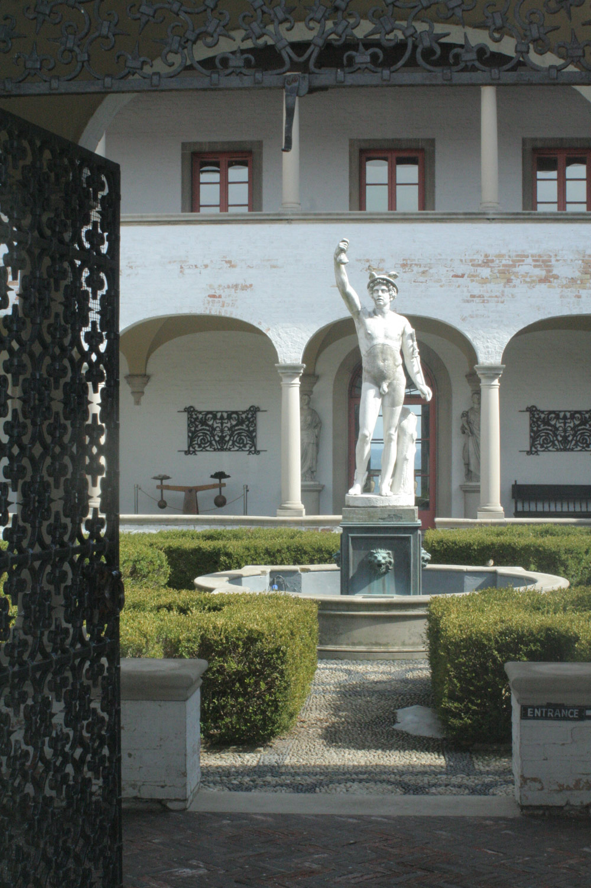
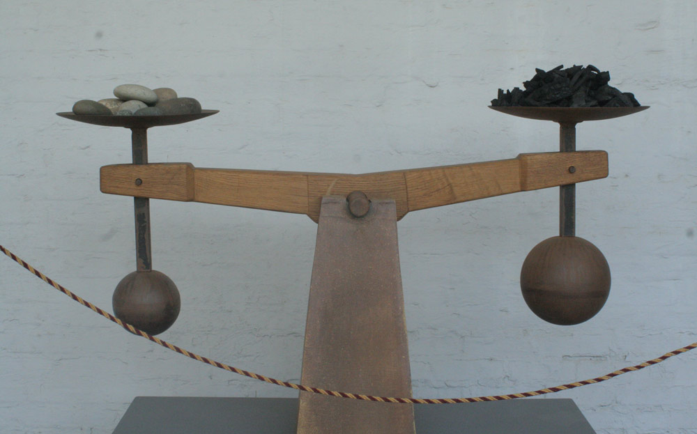
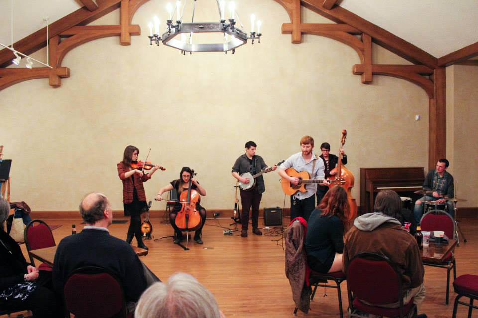
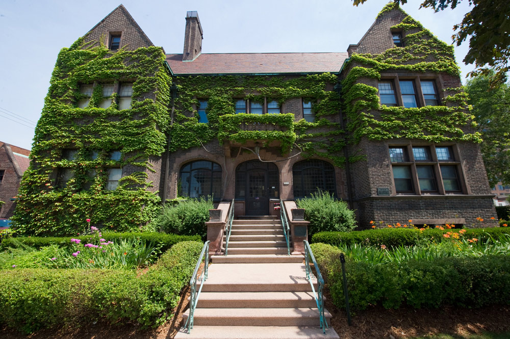

CAVT Collective
Amanda McCabe, Bethany Lato, and Emily Porter are the faces behind the Charles Allis Villa Terrace Collective otherwise known as CAVT. Amanda McCabe, an artist and recent art school graduate, was surprised when she had never heard of the museums in Milwaukee, and wanted to do something about public knowledge of these spaces. People may have known about them, or causally passed them by on the street, but the beautiful structures can appear uninviting or off limits to the common passerby or non-members. CAVT is changing that.
The 19th century mansions have been given a new life through CAVT’s free monthly events aimed at infusing local artists, musicians, poets, and the public. The museums, buried in history and mystery, serve as a beautiful backdrop for Milwaukee’s creative scene with lectures and talks, music events with live painting, and a host of other ideas from the Collective to come in the future.
amfm: How, when, and why did CAVT Collective get started? What kinds of things do you guys do?
cavt collective: We began CAVT Collective in October of 2013 hoping to make a difference in the Milwaukee community. By doing this we wanted to show support to local musicians, artists, speakers, and businesses. Having worked many events within the museums, we noticed the potential both museums had. The museums hold such value in art education as well as history, architecture, and design. That being said, Collective was started by a group of individuals who shared the same love for the museums - who wanted to share that with the Milwaukee community. Through having monthly music concerts, art showings, and inspirational lectures,
we are able to invite the Milwaukee community into the museums, to share the space, and to have a forum for Milwaukee creatives to collaborate and network with each other. It’s so wonderful to see the support artists and musicians bring to each event.
amfm: How is CAVT Collective helping to bring different audiences and awareness to the Charles Allis and Villa Terrace Art Museums?
cavt: We try to bring a variety of creatives into the museums to entice an array of the communities interest while showing Milwaukee these two amazing museums they have in their backyard. By doing this we want the community to feel just as passionate about the museums as we do.
amfm: How have you seen the Collective evolve since its inception?
cavt: It has been amazing how fast the growth of Collective has been. We get so many people coming to our events saying “I’ve always want to come in here,” or “I’m so happy I finally got to come here.” We don’t only promote, or limit, our events to young adults. I had a mother of one of the bands playing at the Villa call the other day asking if she could bring her parents, if it was an environment for elderly people. I told her it is a space for EVERYONE. Through these events we’ve seen connections between young and old. Filling the gap of “age” has really created this great environment for artists to get together and be inspired. Each event seems like more and more people are participating. It’s so awesome! We have also been able to make some wonderful connections with people throughout the city. At nearly every event, we have at least one person telling us how needed these events are, giving us encouragement, or asking how they can get involved or help. We are continually blown away by the support and excitement we receive from people.
amfm: Why is it important to support museums like Charles Allis and Villa Terrace and the local arts scene in Milwaukee?
cavt: It is incredibly important to support museums like the Charles Allis and Villa Terrace because if they are neglected they will no longer be these extraordinary vessels that hold amazing artwork. They would most likely be bought as homes and all the magic would be taken away. And they could potentially be torn down. Supporting local art museums and the Milwaukee art scene is so important in the community because it really helps sculpt Milwaukee. Art and music are blooming in Milwaukee, slowly but surely. If we continue to show support for each other, that support will definitely grow. People will want to move to Milwaukee because of how awesome our art scene is. Without the support of our peers how are we to continue? It is with the help, awareness, and love of the arts that keeps us and the art scene going.
amfm: What is something that people do not know about these two Milwaukee gems?
cavt: They are haunting in the best kind of way. So many people have come into the museums not knowing they were here and immediately falling in love with them, whether it be the history behind them or the art that it holds. These museums stay with you and that is what we are trying to achieve. Awareness. Separately, both museums have their own treasured values. The Villa Terrace was a home owned by Lloyd Smith, grandson of A.O Smith. A.O. Smith Corporation developed a glass lined water heater which made hot water more affordable - most parents and older adults know this, but it’s pretty rad! Lloyd and his wife Agnes built their Villa after returning from their honeymoon in Italy, and went on to raise their 6 children in the home. There are so many little stories that we could share about the family and times that were spent there. The Villa also has a great collection of Cyril Colnik pieces. Colnik was a prominent black smith on Milwaukee’s east side. He has work ranging from gates to sconces to railings some of which can still be found throughout the city. His work is brilliant and very detailed! The Allis, home of Charles Allis, collector and huge supporter of the arts, he and his wife, Sarah, built the home with the intention of it one day becoming an art museum. Many of the pieces in the museum today were part of the Allis’ personal collection. Walking through the mansion, you will find tons of amazing art pieces, including an Albrecht Durer!
amfm: What do you think about the art scene in Milwaukee? What is something you love about the art community in Milwaukee?cavt: The Milwaukee art scene has been thriving extremely so in the past few years. It is intoxicating to witness and makes you, as an artist/creative be even more proud to be a Milwaukeean. There are so many creative people pouring their hearts and souls into what they make that is incredible to watch. With Collective we hope to recognize more creatives that deserve to be seen and heard.
amfm: What are some future goals or plans for CAVT Collective?
cavt: CAVT Collective plans to continue hosting monthly events of music concerts and art showings. In the future we would like to see involvement with younger students and education. Yoga in the garden! Maybe more art workshops. Our most consistent events at this time are our monthly concerts and art showings, which we definitely plan to continue into the future. As of now, the band schedule is set through August! A few other events we have held include lectures and poetry nights, which we would love to see continue on a regular or semi-regular basis. Looking into the future, we have cooked up some new event ideas - art fairs, educational events for students, art workshops, social gatherings and parties, and yoga in the garden. If you would like to stay tuned as to what is coming up, please like us on Facebook, follow us on Instagram, or just shoot us an email. We would love to get a chance to talk to you and welcome you to our events. Cheers Milwaukee!
|  |  | |
|  |  |
 |
For more from CAVT Collective:
CAVT Collective on Facebook
Charles Allis Museum
Villa Terrace
photo credits: ciera mckissick, cavt collective, mada